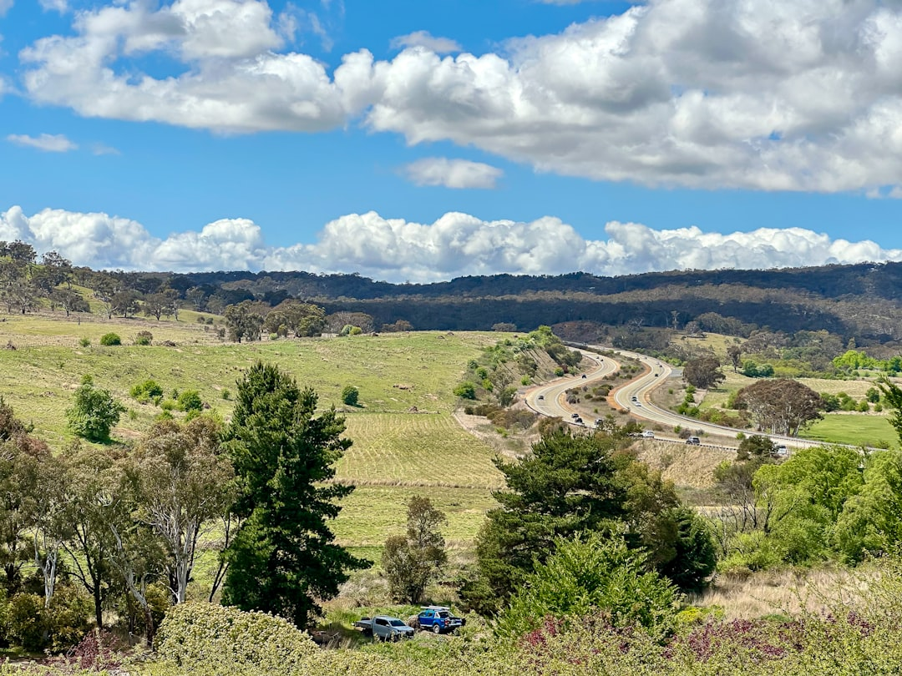

For homeowners comparing retaining wall builders canberra options, the practical question is how the site, water path and ACT approval checks shape the job before a wall system is chosen.
Retaining Wall Builders Canberra Explained
Retaining Walls Canberra frames the first decision around site conditions rather than a stock wall face. The useful brief asks what the wall must retain, where water can safely discharge, and what loads or structures sit close to the retained area.
Those questions change the conversation before materials are compared. A low garden terrace, a boundary level change, a wall below a driveway, and a failing wall with another bank behind it can each require different attention to footing, post design, drainage, engineering and access. A wall face that looks tidy from the front may still be wrong if water has nowhere lawful to go.
For a first enquiry, record the approximate retained height, length, visible movement, access constraints and drainage symptoms. The source guide also asks for suburb or postcode and photos, because a contractor can only discuss the next step properly when the first review is tied to the actual site.
Wall Systems Are A Scope Decision
The source page groups wall options by the kind of work they suit. Steel-reinforced concrete sleeper systems are presented for durable garden, boundary and level-change work. Treated timber is described as suitable for lower garden terraces, stepped beds and straightforward landscape briefs where the conditions fit.
Reinforced block walls are positioned for engineered loads, crisp finishes and integrated landscape structures. Stone and boulder systems suit landscape-led projects where mass, drainage and access fit the method. Gabion walls are described as rock-filled basket systems for textured and free-draining applications when foundations and filter separation are correctly detailed.
The separate drainage pathway is important. Aggregate, filter separation and a subsoil drain are only useful when the site has a lawful and practical discharge route. That makes drainage part of the brief, not an add-on chosen after the wall finish.
Repair, Replacement And Warning Signs
A leaning or cracked wall does not automatically point to a simple surface repair. The source guide links movement with possible water pressure, decayed timber, corroded posts, insufficient embedment, changed loads or ground movement. The visible symptom is only the start of the assessment.
Useful notes include what changed, what happens after rain, whether water marks appear, and what sits above the wall. Photographs from both ends, where safe, can show lean, bulging, cracking, rot, corrosion and drainage marks without disturbing the ground beside the wall.
The guide specifically says not to excavate beside an unstable wall to investigate it yourself. The safer editorial takeaway is to document the condition and ask whether the scope should be repair, replacement, drainage correction, engineering input or approval review.
ACT Approval Questions To Ask Early
Canberra retaining wall approvals are presented as separate checks rather than one yes or no test. The source page distinguishes building approval, development approval and stormwater easement questions. It also says the actual geometry decides which checks apply.
Height alone is not enough. The source FAQ says wall height, location and design can affect building approval, while fill, cut-in and combination walls have different development approval exemption considerations, including boundary-related limits. It also notes that height may be measured from the top of the wall to the lowest adjacent ground level for building approval guidance, with datum ground level relevant to some development approval tests.
Ask these questions before accepting a wall type:
- Is the wall near a boundary, easement, driveway, building, fence, steep bank or second wall?
- Does the proposal involve fill, cut-in work, or a combination of both?
- Where will stormwater go, and can that route be shown on the site plan?
- Does the job need designer, certifier or engineering input before construction details are settled?
Who This Applies To
This guide is most relevant to owners, buyers and property managers planning a new wall, replacing a failing wall, or comparing options after visible movement. It also helps when a landscape idea depends on changing levels, because retaining, drainage and approval questions can alter the design before finish choices matter.
It is less useful for choosing colours or decorative finishes in isolation. The wall face should follow the retained load, access, water path and approval setting. For a broader companion overview of retaining walls in Canberra, the sibling guide can help place these quote inputs in a wider planning context.
Before requesting a quote, prepare a short brief with dimensions, photos, the site access route, nearby structures, observed water behaviour and any known easement concern. That gives the builder enough context to talk about the right pathway rather than guessing from a single photo.
- Record the wall. Measure approximate height and length, note what sits above it, and photograph both ends where safe.
- Describe the water path. Write down where water appears after rain and where any proposed subsoil drain could lawfully discharge.
- Flag ACT checks. Ask whether building approval, development approval or a stormwater easement question applies to the actual geometry.
- Compare systems by fit. Match concrete sleeper, timber, block, stone, boulder or gabion options to load, access, drainage and finish needs.
| Question | Repair pathway | Replacement pathway |
|---|---|---|
| Visible condition | Local cracking, marks or isolated defects need assessment before assuming the structure is sound. | Lean, bulging, rot, corrosion or repeated water symptoms may point to a broader replacement scope. |
| Drainage brief | Ask whether existing drainage can be corrected without rebuilding the whole wall. | Ask how aggregate, filter separation, subsoil drainage and discharge will be detailed behind the new wall. |
| Approvals | Confirm whether the proposed repair changes height, load, location or drainage. | Confirm building approval, development approval and stormwater easement questions before finalising design. |
This guide covers site scoping, wall system choice, drainage inputs and ACT approval questions for Canberra retaining wall projects.